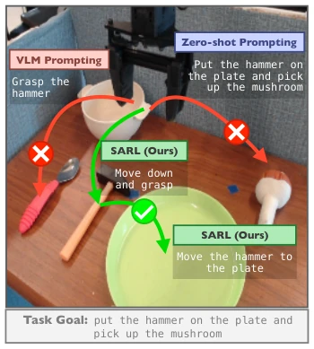
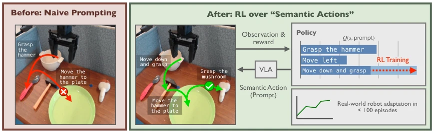
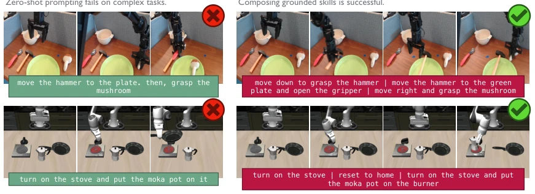
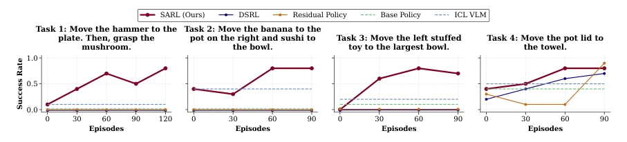
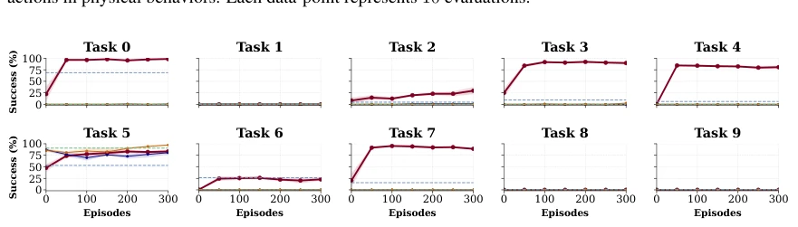
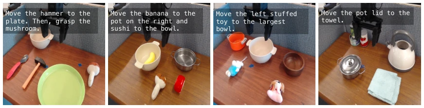
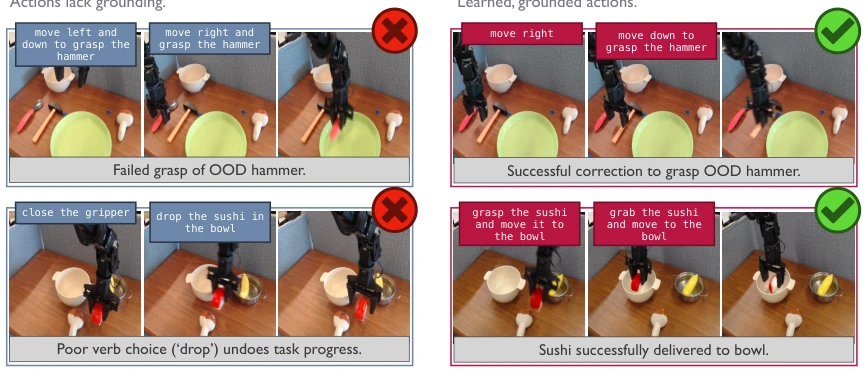
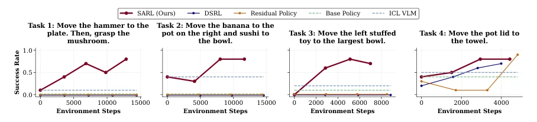
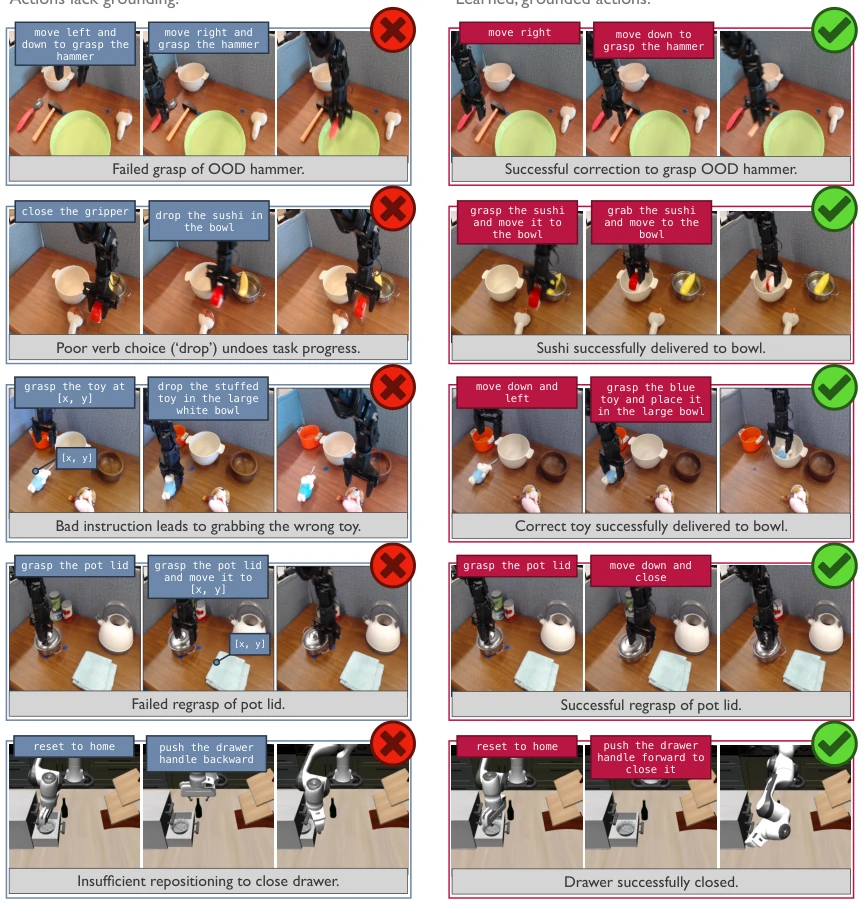

This major work from Berkeley offers a "semantic prescription" for VLA models. The authors do not persist in the action space but treat language prompts as actions for reinforcement learning; this "dimensionality reduction strike" indeed provides a new solution for long-horizon tasks. However, do not rejoice too soon; this method is essentially "parameter tuning" rather than "skill training," relying on the pre-trained VLA's skill library being sufficiently large, otherwise, even a clever woman cannot cook without rice. Moreover, VLM inference within the loop is slow, making real-time performance a significant drawback. Although the paper boasts extravagantly, claiming it can unlock new capabilities, essentially it relies on RL to "excavate" skills hidden within the VLA, constituting clever utilization of priors rather than creation of new priors. For tasks requiring fine-grained physical interaction, relying solely on language instructions may still not be sufficiently robust.
General robot policies (VLA) can generalize, yet direct prompting often fails on complex long-horizon tasks [1-4]. Existing improvement methods such as Residual RL [12, 13] or DSRL [20] optimize directly in the action space, assuming the base policy distribution is close to optimal; once tasks exceed the distribution (OOD), action-level fine-tuning becomes ineffective. Other work uses VLMs to generate instructions [53]; although capable of decomposing tasks, they lack physical grounding, where selecting the wrong words leads to failure. Existing methods either fail to decompose complex goals or fail to ensure instructions can be executed. We require a method that can both leverage VLA skill priors and learn through interaction how to correctly "command" it, bridging the gap between semantics and physical behavior.

Figure 2: Adapting VLAs to solve new tasks requires decomposing task-goals into achievable stages, and grounding each stage in behaviors that can be executed success- fully in the environment. VLAs prompted zero-shot struggle with both decomposi- tion and grounding, and prompting VLAs with VLMs achieves decomposition but not grounding. Only SARL achieves both by learning to optimize a VLA’s prompt inputs with RL.
The core of SARL is treating VLA language prompts as "semantic actions" to construct a semantic MDP. The pipeline consists of three steps: First, utilize a VLM to generate a set of candidate prompts based on current observations and the task, compressing the search space; Second, the RL agent samples prompts from the candidate set as actions based on the Q-function, the VLA executes them and observes the reward; Third, update Q-values via TD, learning which prompts lead to task progress. The innovations lie in: 1. Lifting the optimization target from low-level actions to the semantic layer, utilizing the VLA's internal skill library; 2. Combining VLM priors with online RL feedback, ensuring both semantic rationality and physical executability; 3. The algorithm supports caching prompts to accelerate convergence. This focuses the exploration space on behaviors already encoded in the VLA, rather than blindly attempting actions.

Figure 1: Steering VLA priors at deployment to solve complex, long-horizon tasks is challenging. To over- come this, we propose optimizing VLA language inputs via RL. The resulting semantic action space probes skills already encoded in VLAs from pretraining, yielding expressive exploration and efficient adaptation. However, not all induced behaviors make task progress: by learning to decompose complex tasks into grounded skills, our method identifies effective task-solving prompts and enables real-robot adaptation in under 100 episodes.

Figure 6: On complex, long-horizon tasks, the base policy fails when zero-shot prompted. SARL solves them through learned prompting, sequencing skills covered under the pretraining distribution.
Tested on Libero-10 simulation and the WidowX real robot. Baselines include DSRL [20], Residual RL [13, 17, 18], and ICL VLM [53]. The metric is success rate. Results show SARL improved the success rate from 0% to 80% within 100 episodes, significantly outperforming the baselines. DSRL and Residual RL completely failed to learn on complex tasks; ICL VLM could decompose but often selected wrong words leading to failure. Ablation studies indicate that decomposition alone is insufficient and must be combined with physical grounding. Real-robot experiments demonstrate that the method is robust on long-horizon tasks, but VLM inference speed limits real-time performance.

Figure 3: Across four complex, real-world tasks, learning over semantic actions with SARL enables the best improvement of generalist policy behavior in deployment. In particular, SARL enables new capabilities over prior steering methods such as DSRL [20] and Residual RL [13, 17, 18], as these methods are funda- mentally constrained by the base policy’s performance under the task’s original prompt. In addition, SARL outperforms an in-context learning VLM baseline (ICL VLM) [53], since VLMs struggle to ground semantic actions in physical behaviors. Each data-point represents 10 evaluations.

Figure 4: SARL outperforms prior methods for deployment-time adaptation — DSRL [20], Residual RL [13, 17, 18], and in-context learning with VLMs [53] — on long-horizon Libero-10 tasks [81]. SARL successfully adapts a policy [82] on five tasks, and matches performance on another already close to solved. Four tasks remain unsolved by any method. Each graphed data-point represents 64 evaluations and standard error over 3 seeds.

Figure 5: We test our approach on four complex, long-horizon tasks on the WidowX robot, illustrated above, along with ten tasks on the simulated Libero-10 benchmark [81].

Figure 7: Across tasks, an in-context learning VLM [53] selects instructions that are semantically meaningful, but lack grounding in physical behaviors, leading to task failures. By contrast, SARL’s learned semantic actions correctly navigate scenarios where choosing the right instruction is critical. Additional examples can be found in Figure 9.

Figure 8: Across four complex, real-world tasks, learning over semantic actions with SARL enables the best improvement of generalist policy behavior in deployment. SARL enables new capabilities over prior steering methods such as DSRL [20] and Residual RL [13, 17, 18], as these methods are fundamentally constrained by the base policy’s performance under the task’s original prompt. In particular, both DSRL and Residual RL perform best on Task 4, which has the least complex task goal. Finally, our method outperforms an in- context learning VLM baseline (ICL VLM) [53], since VLMs struggle to ground semantic actions in physical behaviors. Each data-point represents 10 evaluations. This plot mirrors Figure 3, but the x-axis is changed to measure environment steps instead of episodes.

Figure 9: Across tasks, an in-context learning VLM [53] takes semantic actions that are semantically mean- ingful, but lack grounding in physical behaviors, leading to task failures. By contrast, SARL’s learned se- mantic actions correctly navigate scenarios where choosing the right instruction is critical.